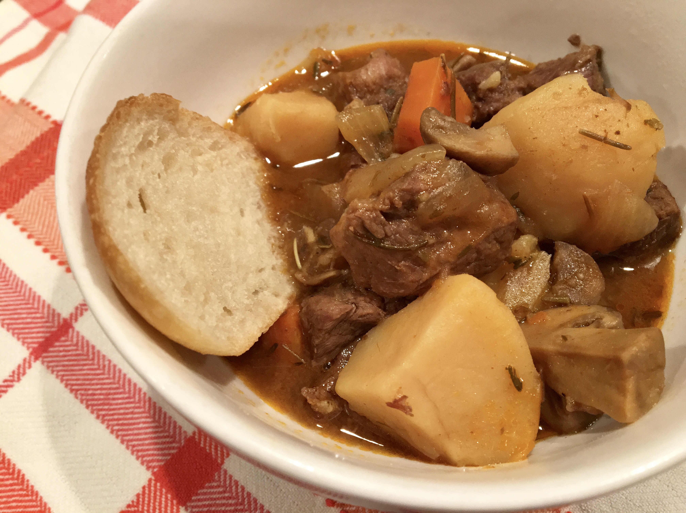

Beef Stew

Ingredients
- 1 tablespoon butter
- 1 pund beef chuck, cut into 1-inch cubes
- 4 Yukon Gold potatoes, cubed
- 1 ½ cups mushrooms, halved
- 1 onion, cut into 6 wedges
- 2 carrots, cut into 1/2-inch thick slices
- 2 clovers garlic, minced
- 3 cups beef broth
- 1 tablespoon Worcestershire sauce
- 1 tablespoon tomato paste
- 1 teaspoon salt
- ½ teaspoon ground black pepper
- ½ teaspoon dried rosemary
Steps
- Turn on a multi-functional pressure cooker and select Saute function.
Melt butter and cook beef chuck cubes in batches until browned on all sides, about 5 minutes per batch.
- Return all beef chuck to the pot. Add potatoes, mushrooms, onion, carrots, and garlic; cover with beef broth.
Stir in Worcestershire sauce, tomato paste, salt, pepper, and rosemary. Close and lock the lid.
Select Meat/Stew function according to manufacturer's instructions; set timer for 35 minutes. Allow 10 to 15 minutes for pressure to build.
- Release pressure using the natural-release method according to manufacturer's instructions, 10 to 40 minutes.
Unlock and remove the lid.
Return to main page